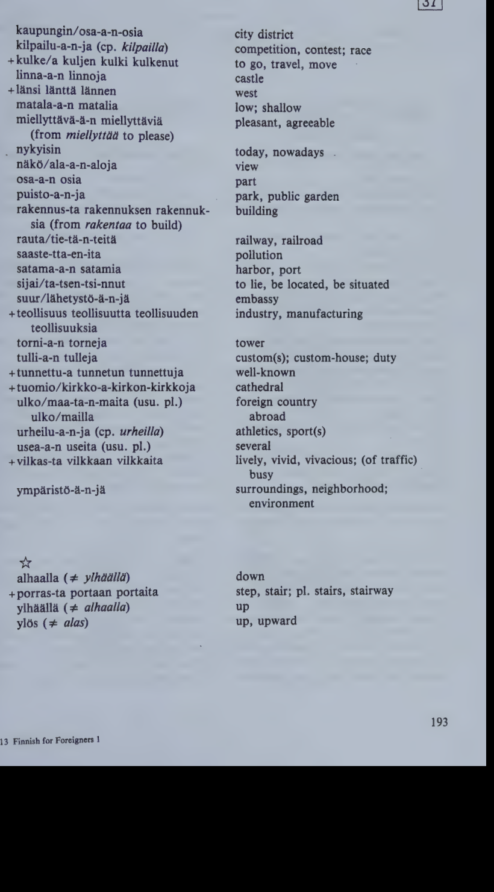
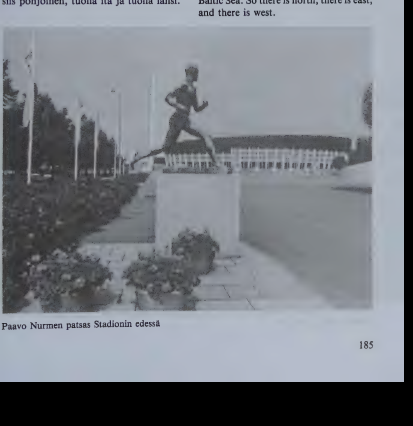
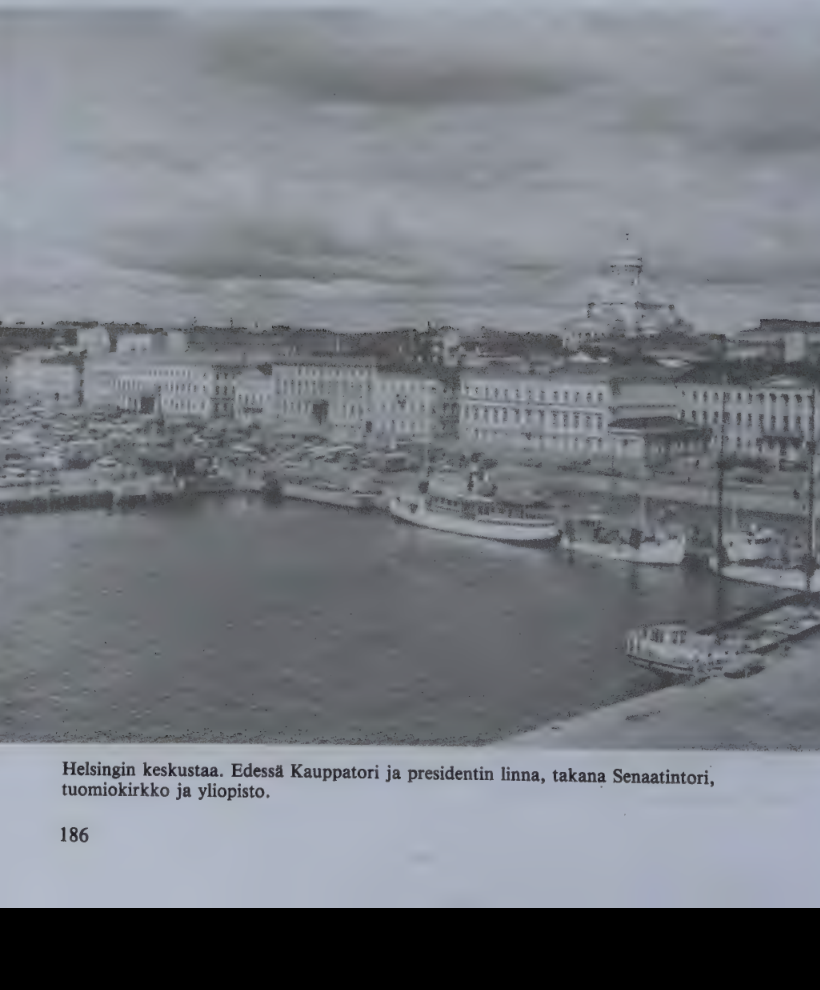
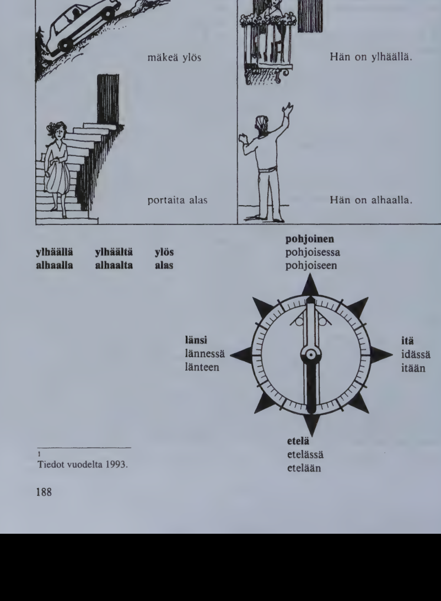

Kappale 37 / Lesson 37#
Katsellaanpa Helsinkia / Let’s take a look at Helsinki#

Kalle Oksanen ja James Brown ovat nousseet Stadionin torniin katselemaan Helsinkia.
Suomi |
English |
|---|---|
1. K. No niin, taalla ollaan! Taalla ovat maan suurimmat urheilukilpailut. Ja tasta tornista on paras nakoala yli koko kaupungin. |
1. K. Well, here we are! The biggest sports events in Finland take place here. And from this tower we have the best view of the whole city. |
2. J. Missa pain on etela? |
2. J. Which direction is south? |
3. K. Tuolla. Etelassa on meri, Suomenlahti, joka on osa Itamerta. Tuolla on siis pohjoinen, tuolla ita ja tuolla lansi. |
3. K. Over there. In the south is the sea, the Gulf of Finland, which is part of the Baltic Sea. So there is north, there is east, and there is west. |

Suomi |
English |
|---|---|
4. J. Katso tuonne alas, lahelle Stadionia. Mika tuo matala, harmaa rakennus on? |
4. J. Look down there, near the Stadium. What’s that low grey building? |
5. K. Se on Jaahalli. |
5. K. It’s the Ice Hall. |
6. J. Silloin tuo katu on Mannerheimintie. |
6. J. Then that street is Mannerheim Road. |
7. K. Niin on, Helsingin pisin katu. Jos kuljetaan sita pitkin Toolosta keskustaa kohti, on vasemmalla puolella Finlandia-talo, paakaupungin konsertti- ja kongressisali. |
7. K. Yes, the longest street in Helsinki. If we go along it from Toolo towards the Center, Finlandia Hall, the capital’s concert and congress hall, is on the left. |
8. J. Anna minun jatkaa. Finlandia-taloa vastapaata on Kansallismuseo. |
8. J. Let me go on. Across the street from Finlandia Hall is the National Museum. |

Suomi |
English |
|---|---|
9. K. Sen takana oikealla on Temppeliaukion kirkko. |
9. K. Beyond the Museum, to the right, is the Temple Square Church. |
10. J. Kaunein kaikista moderneista kirkoista, mita olen nahnyt. |
10. J. The most beautiful of all modern churches that I have seen. |
11. K. Takaisin Mannerheimintielle. Naethan tuolla Eduskuntatalon? |
11. K. Back to Mannerheim Road. Can you see the Parliament Building over there? |
12. J. Kylla, ja sitten ollaankin aivan keskustassa. Ahaa, rautatieasema! Tunnen sen tornin. |
12. J. Yes, I can, and then we are right in the Center. Ah, the Railroad Station! I recognize its tower. |
13. K. Mannerheimintielta vasemmalle lahtee Aleksanterinkatu. |
13. K. To the left of Mannerheim Road runs Alexander Street. |
14. J. Helsingin tarkein liikekatu, eiko niin? |
14. J. The most important business street in Helsinki, isn’t it? |
15. K. Kylla, mutta tarkea on myos Esplanadi, jonka toisessa paassa, meren rannalla, on Kauppatori. |
15. K. Yes, but the Esplanade is important, too. At its other end, by the sea, is the Market Square. |
16. J. Tiedan. Siella on myos Etelasatama ja tulli. Sinne tulevat matkustajalaivat ulkomailta. |
16. J. I know. That’s where the South Harbor is, too, and the Customs Office. That’s where passenger boats arrive from abroad. |
17. K. Tuo suuri vihrea alue on Kaivopuisto, jossa on useita ulkomaiden lahetystoja. |
17. K. That large green area is Kaivopuisto Park where there are several foreign embassies. |
18. J. Ja presidentin linna. |
18. J. And the President’s Castle. |
19. K. Ei, presidentin linna on tuolla, Etelasataman ja tuomiokirkon valilla. Tuomiokirkon ymparilla sijaitsevat yliopisto, yliopiston kirjasto ja Suomen pankki. Se on kaupungin vanha keskusta. |
19. K. No, the President’s Castle is over there, between the South Harbor and the Cathedral. The University, the University Library, and the Bank of Finland are located around the Cathedral. It’s the old center of the city. |
20. J. Mina pidan siita enemman kuin uusista kaupunginosista. |
20. J. I like it better than the new districts. |
21. K. Idassa ja pohjoisessa on Helsingin suurin teollisuusalue. Tunnetuin sen tehtaista on Arabian posliinitehdas. |
21. K. In the east and north is Helsinki’s largest industrial area. The best known of its factories is the Arabia porcelain factory. |
22. J. Onko Helsingissa elaintarhaa? |
22. J. Does Helsinki have a Zoo? |
23. K. On, Korkeasaari, tuolla. Sen lahella ovat Suomenlinnan saaret. |
23. K. Yes, Korkeasaari, there. In the neighborhood are the islands of Suomenlinna. |
24. J. Helsinki on kauniilla paikalla. Se on minusta miellyttava kaupunki. |
24. J. Helsinki is beautifully situated. I think it’s a pleasant city. |
25. K. Niin minustakin. Mutta tietysti elama on vahemman vilkasta kuin suurkaupungeissa. |
25. K. I think so, too. But life in Helsinki is naturally less busy than in big cities. |
26. J. Mina olen vasynyt suurkaupunkeihin ja niiden saasteisiin. - Paljonko asukkaita Helsingissa on? |
26. J. I’m tired of big cities and their pollution. How many inhabitants does Helsinki have? |
27. K. 501 700 henkea. Helsingissa ja sen ymparistossa asuu nykyisin noin 17 prosenttia Suomen kansasta. |
27. K. 501 700 people. Today about 17 per cent of the Finnish people live in Helsinki and its vicinity. |
Saamelaiset (= lappalaiset) asuvat Pohjois-Suomessa (“in the north of Finland”). Kemi on Oulusta pohjoiseen (pain) tai Oulun pohjoispuolella (“to the north of”).

Kielioppia / Structural notes#
1. Superlative of adjectives#
Finnish |
English |
|---|---|
Tama on hieno/in pukuni. |
This is my finest dress/suit. |
Maailman korkei/n rakennus. |
The highest building in the world. |
Kaikkein suuri/in. |
The biggest of all, the very biggest. |
The superlative of adjectives is formed with the suffix -in.
As in the comparative, the stem for forming the superlative is obtained from the genitive. The final vowel of the stem may undergo some changes.
The final -a, -a, -e is dropped:
Finnish |
English |
Comparative |
Superlative |
English |
|---|---|---|---|---|
+halpa |
cheap |
halvempi |
halv/in |
cheapest |
+rakas |
dear |
rakkaampi |
rakka/in |
dearest |
vihrea |
green |
vihreampi |
vihre/in |
greenest |
pieni |
small |
pienempi |
pien/in |
smallest |
vihainen |
angry |
vihaisempi |
vihais/in |
angriest |
terve |
healthy |
terveempi |
terve/in |
healthiest |
The final -i(i) of the stem changes into -e-:
Finnish |
English |
Comparative |
Superlative |
English |
|---|---|---|---|---|
siisti |
clean |
siistimpi |
siiste/in |
cleanest |
kaunis |
beautiful |
kauniimpi |
kaune/in |
most beautiful |
The following superlatives do not follow these rules:
Finnish |
English |
Comparative |
Superlative |
English |
|---|---|---|---|---|
hyva |
good |
parempi |
paras (parhain) |
best |
pitka |
long |
pitempi |
pisin |
longest |
+uusi |
new |
uudempi |
uusin |
newest |
lyhyt |
short |
lyhyempi, lyhempi |
lyhyin |
shortest |
monet, useat |
many, several |
useammat |
useimmat |
most |
Note here also the adverbs paljon (enemman) eniten most, vahan (vahemman) vahiten least.
The superlative is inflected like a normal adjective. The principal parts are always of the type
lahin - lahinta - lahimman - lahimpia
(“into” case lahimpaan)
Examples:
Finnish |
English |
|---|---|
Haluan hienointa kiinalaista teeta. |
I want some of the finest Chinese tea. |
Oletko nahnyt Saabin uusimman automallin? |
Have you seen the newest car model of the Saab? |
Helsingin lahimmat naapurit ovat Espoo, Vantaa ja Kauniainen. |
The nearest neighbors of Helsinki are Espoo, Vantaa, and Kauniainen. |
Savonlinna on Suomen kauneimpia kaupunkeja. |
S. is one of the most beautiful cities in Finland. |
Tulemme nyt Suomen pohjoisimpaan kaupunkiin. |
We are now coming to the northernmost city in F. |
2. Post and prepositions with the partitive#
There are also post and prepositions with the partitive.
Postpositions:
Finnish |
English |
|---|---|
kohtaan |
to, toward(s) |
varten |
for (the purpose of) |
vastaan |
against |
menna vastaan |
to go and meet somebody |
Prepositions:
Finnish |
English |
|---|---|
ilman |
without |
paitsi |
except; besides |
Post or prepositions:
Finnish |
English |
|---|---|
ennen |
before, prior to |
kohti |
toward(s), in the direction of |
pitkin |
along |
vailla |
without, lacking |
vasta/paata |
opposite, on the opposite side, across … from |
Examples:
Finnish |
English |
|---|---|
Olet aina niin ystavallinen mei/ta kohtaan (= meille). |
You are always so kind towards us. |
Mi/ta varten (= miksi) teit sen? |
What did you do it for? |
Olemme ta/ta paatosta vastaan. |
We are against this decision. |
Perhe meni isa/a vastaan asemalle. |
The family went to meet Father at the station. |
Laiva kulkee satama/a kohti. |
The ship is going towards a harbor. |
Tulkaa kotiin ennen kuutta/ta! |
Come home before six! |
En voi elaa ilman sinu/a. |
I cannot live without you. |
Paitsi tei/ta tunnemme taalla vain pari ihmista. |
Besides you, we know only two or three people here. |
Mies on tyo/ta vailla. |
The man is without a job. |
Posti on pankki/a vastapaata. |
The post office is across the street from the bank. |
vastapaata pankki/a |
Note: keskella and lahella are used either as postpositions with the gen. or prepositions with the part.:
Finnish |
English |
|---|---|
piha/n keskella = keskella piha/a |
in the middle of the yard |
Helsingi/n lahella = lahella Helsinki/a |
near Helsinki |
3. Plural of nouns: local cases (II)#
Review part I in lesson 35:1.
To finish with the plural of nouns, words with weak grade in the genitive sing. must still be examined.
Note in the examples below that the pl. cases have the same k p t grade as the corresponding sing. cases. In other words:
use the part. pl. stem unchanged only for the “into” case;
“weaken” the stem for the other local cases.
Examples:
Sing. |
Pl. |
|
|---|---|---|
+koti kodi/n |
kotej/a (kotei-, weak kodei-) |
|
“into” |
kotiin |
kotei/hin |
“on” |
kodi/lla |
kodei/lla |
“from” |
kodi/lta |
kodei/lta |
“onto” |
kodi/lle |
kodei/lle |
“in” |
kodi/ssa |
kodei/ssa |
“out of” |
kodi/sta |
kodei/sta |
+tytto tytOn |
tyttOj/A (tyttOi-, weak tytOi-) |
|
|---|---|---|
“into” |
tyttOOn |
tyttOi/hin |
“on” |
tytO/lla |
tytOi/lla |
“from” |
tytO/lta |
tytOi/lta |
“onto” |
tytO/lle |
tytOi/lle |
“in” |
tytO/ssa |
tytOi/ssa |
“out of” |
tytO/sta |
tytOi/sta |
+poika pojan |
poiki/a (poiki-, weak poji-) |
|
|---|---|---|
“into” |
poikaan |
poiki/in |
“on” |
poja/lla |
poji/lla |
“from” |
poja/lta |
poji/lta |
“onto” |
poja/lle |
poji/lle |
“in” |
poja/ssa |
poji/ssa |
“out of” |
poja/sta |
poji/sta |
+halpa halvan |
halpoj/a (halpoi-, weak halvoi-) |
|
|---|---|---|
“into” |
halpaan |
halpoi/hin |
“on” |
halva/lla |
halvoi/lla |
“from” |
halva/lta |
halvoi/lta |
“onto” |
halva/lle |
halvoi/lle |
“in” |
halva/ssa |
halvoi/ssa |
“out of” |
halva/sta |
halvoi/sta |
Sanasto / Vocabulary#
Finnish |
English |
|---|---|
alas (# ylos) |
down, downward |
alue-tta-en-ita |
area, region |
+anta/a annan antoi antanut |
(also:) to allow, let |
Anna minu/n menna! |
Let me go! |
+asukas-ta asukkaan asukkaita |
inhabitant |
aukio-ta-n-ita |
open space; square |
+edus/kunta-a-kunnan-kuntia |
Diet, (Finnish) parliament |
elama-a-n |
life |
etela-a-n |
south |
ita-a-idan |
east |
jatka/a jatkan jatkoi jatkanut |
to continue, go on |
kansa-a-n kansoja |
people, nation |
kaupungin/osa-a-n-osia |
city district |
kilpailu-a-n-ja |
competition, contest; race |
+kulke/a kuljen kulki kulkenut |
to go, travel, move |
linna-a-n linnoja |
castle |
+lansi lantta lannen |
west |
matala-a-n matalia |
low; shallow |
miellyttava-a-n miellyttavia |
pleasant, agreeable |
nykyisin |
today, nowadays |
nako/ala-a-n-aloja |
view |
osa-a-n osia |
part |
puisto-a-n-ja |
park, public garden |
rakennus-ta rakennuksen rakennuksia |
building |
rauta/tie-tta-n-teita |
railway, railroad |
saaste-tta-en-ita |
pollution |
satama-a-n satamia |
harbor, port |
sijai/ta-tsen-tsi-nnut |
to lie, be located, be situated |
suur/lahetysto-a-n-ja |
embassy |
+teollisuus teollisuutta teollisuuden teollisuuksia |
industry, manufacturing |
torni-a-n torneja |
tower |
tulli-a-n tulleja |
custom(s); custom-house; duty |
+tunnettu-a tunnetun tunnettuja |
well-known |
+tuomio/kirkko-a-kirkon-kirkkoja |
cathedral |
ulko/maa-ta-n-maita (usu. pl.) |
foreign country |
ulko/mailla |
abroad |
urheilu-a-n-ja |
athletics, sport(s) |
usea-a-n useita (usu. pl.) |
several |
+vilkas-ta vilkkaan vilkkaita |
lively, vivid, vivacious; (of traffic) busy |
ymparisto-a-n-ja |
surroundings, neighborhood; environment |
*
Finnish |
English |
|---|---|
alhaalla (# ylhaalla) |
down |
+porras-ta portaan portaita |
step, stair; pl. stairs, stairway |
ylhaalla (# alhaalla) |
up |
ylos (# alas) |
up, upward |